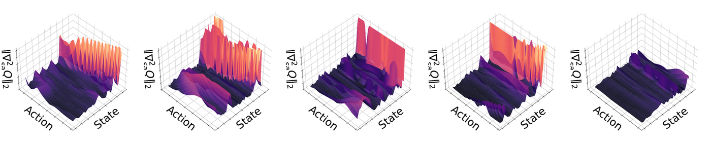
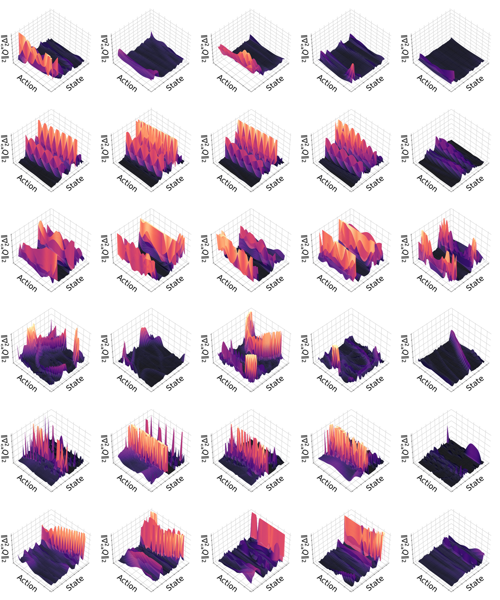
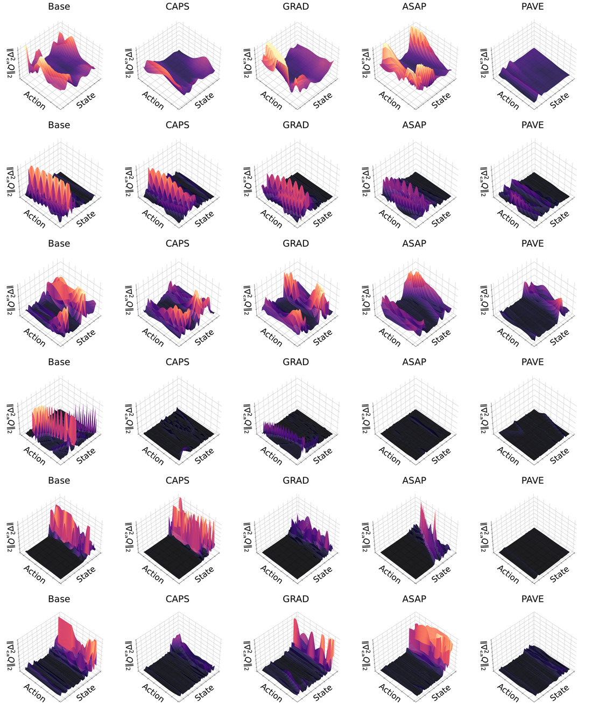

Policies learned via continuous actor-critic methods often exhibit erratic, high-frequency oscillations, making them unsuitable for physical deployment. Current approaches attempt to enforce smoothness by directly regularizing the policy's output. We argue that this approach treats the symptom rather than the cause. In this work, we theoretically establish that policy non-smoothness is fundamentally governed by the differential geometry of the critic. By applying implicit differentiation to the actor-critic objective, we prove that the sensitivity of the optimal policy is bounded by the ratio of the Q-function's mixed-partial derivative (noise sensitivity) to its action-space curvature (signal distinctness). To empirically validate this theoretical insight, we introduce Policy-Aware Value-field Equalization (PAVE), a critic-centric regularization framework that treats the critic as a scalar field and stabilizes its induced action-gradient field. PAVE rectifies the learning signal by minimizing the Q-gradient volatility while preserving local curvature. Experimental results demonstrate that PAVE achieves smoothness comparable to policy-side smoothness regularization methods, while maintaining competitive task performance, without modifying the actor.
To remediate the fundamental origin of action instability in actor-critic methods, we analyze how the differential geometry of the value function dictates the behavior of the induced policy. We derive the sensitivity of the greedy policy $a^{*}(s) = \arg\max_{a} Q(s, a)$ with respect to state perturbations and show, via the Implicit Function Theorem (IFT), that policy smoothness is governed by specific Hessian terms of the critic.
In the actor-critic paradigm, the actor $\pi_\phi(s)$ is optimized to approximate the maximizer of the Q-function. Even when the actor is a neural network, its update direction is fundamentally driven by $\nabla_a Q(s,\pi_\phi(s))$. The geometric regularity of the explicit maximizer $a^{*}(s) = \arg\max_{a} Q(s, a)$ therefore imposes a fundamental limit on the learned policy: $\pi_\phi$ cannot be smoother than $a^{*}$ without deviating from the optimal action.
Geometrically, policy sensitivity is the product of an inverse curvature term and a mixed-partial coupling term: $\nabla^{2}_{sa} Q$ acts as a forcing term that dictates how the ascent direction shifts under state perturbations, while $[\nabla^{2}_{aa} Q]^{-1}$ acts as an amplification factor determined by the flatness of the landscape. If the Q-surface is flat (low curvature), the inverse Hessian explodes, rendering the policy hypersensitive to even negligible gradient rotations.
PAVE directly enforces the geometric stability conditions derived above. Instead of constraining the actor, PAVE regularizes the critic to minimize the Lipschitz bound $L \le M/\mu$ and to enforce trajectory consistency. This is achieved by three synergistic objectives: (1) suppressing noise sensitivity ($M$) via Mixed-Partial Regularization, (2) aligning temporal vector fields via Vector Field Consistency, and (3) preserving curvature ($\mu$) via Curvature Preservation to prevent geometric collapse. The losses below are finite-difference proxies that incentivize the desired geometric properties rather than guaranteeing them.
To minimize the numerator $M$ in the Lipschitz bound, we suppress the magnitude of $\nabla^{2}_{sa} Q$. Direct construction of the mixed Hessian costs $\mathcal{O}(d^{2})$, which is prohibitive online. We instead use a finite-difference proxy grounded in a Taylor expansion. Considering a small state perturbation $\epsilon$, $$ \nabla_a Q(s+\epsilon, a) \;=\; \nabla_a Q(s, a) + \nabla^{2}_{sa} Q(s,a)\,\epsilon + \mathcal{O}(\|\epsilon\|^{2}), $$ so $\|\nabla_a Q(s+\epsilon, a) - \nabla_a Q(s, a)\|$ is an efficient proxy for the Hessian-vector product $\|\nabla^{2}_{sa} Q\,\epsilon\|$. This motivates
$$ \mathcal{L}_{\mathrm{MPR}}(\theta) \;=\; \mathbb{E}_{\substack{(s,a)\sim\mathcal{D}\\ \epsilon \sim \mathcal{N}(0,\sigma^{2}I)}} \Bigl[\; \bigl\| \nabla_a Q(s+\epsilon, a) - \nabla_a Q(s, a) \bigr\|_2^{2} \;\Bigr]. $$
Formal justification. Substituting the linear approximation and integrating over the isotropic Gaussian noise $\epsilon$, $$ \mathcal{L}_{\mathrm{MPR}} \;\approx\; \mathbb{E}_\epsilon\!\left[\,\epsilon^{\top} (\nabla^{2}_{sa} Q)^{\top} (\nabla^{2}_{sa} Q)\, \epsilon\,\right] \;=\; \sigma^{2}\,\|\nabla^{2}_{sa} Q\|_F^{2}. $$ Since the spectral norm is upper-bounded by the Frobenius norm ($\|A\|_2 \le \|A\|_F$), minimizing $\mathcal{L}_{\mathrm{MPR}}$ encourages a smaller upper bound on $M$.
MPR enforces spatial smoothness via isotropic perturbations, but stable robotic control also requires temporal coherence along trajectories. Interpreting $\nabla_a Q(s, a)$ as the score function of an implicit Boltzmann policy $p(a\mid s) \propto \exp(Q(s,a))$, we frame temporal stability as minimizing the distributional shift of the policy across consecutive states — a Fisher-divergence-style objective:
$$ \mathcal{L}_{\mathrm{VFC}}(\theta) \;=\; \mathbb{E}_{(s_t, a_t, s_{t+1}) \sim \mathcal{D}} \Bigl[\; \bigl\| \nabla_a Q(s_t, a_t) - \nabla_a Q(s_{t+1}, a_t) \bigr\|_2^{2} \;\Bigr]. $$
Formal justification. Using the first-order expansion $s_{t+1} \approx s_t + \Delta s_t$, $$ \bigl\|\nabla_a Q(s_{t+1}, a_t) - \nabla_a Q(s_t, a_t)\bigr\|_2^{2} \;\approx\; \bigl\|\nabla^{2}_{sa} Q(s_t, a_t)\, \Delta s_t\bigr\|_2^{2}. $$ Whereas MPR reduces $M$ globally, VFC encourages a smaller $M$ specifically along the state transitions imposed by the environment dynamics ($\nabla^{2}_{sa} Q\,\Delta s_t$). This mitigates the "chattering" effect caused by conflicting gradients at adjacent timesteps.
Minimizing $\mathcal{L}_{\mathrm{MPR}}$ in isolation introduces a pathological risk: the network may collapse $Q$ to a trivial flat plane (i.e.\ $\nabla_a Q \approx 0$ everywhere) to satisfy the smoothness penalty. By Proposition 2, if $Q$ becomes flat, $\|[\nabla^{2}_{aa} Q]^{-1}\|$ diverges, paradoxically amplifying policy sensitivity. To preclude this "over-smoothing" collapse, we enforce a curvature lower bound:
$$ \mathcal{L}_{\mathrm{Curv}}(\theta) \;=\; \mathbb{E}_{\substack{(s,a) \sim \mathcal{D}\\ v \sim p(v)}} \Bigl[\; \max\!\bigl(0,\; v^{\top} \nabla^{2}_{aa} Q(s, a)\, v + \delta \bigr) \;\Bigr], $$
where $\delta > 0$ is the minimum required sharpness. Computational efficiency is preserved by Hutchinson's trace estimator with random Rademacher vectors $v$. To enable a valid Hessian computation we use SiLU activations in the critic to ensure $C^{2}$ continuity.
Formal justification. This regularizer explicitly targets the denominator $\mu$ in the Lipschitz bound $L \le M/\mu$. By penalizing projected curvature values $v^{\top} \nabla^{2}_{aa} Q\, v$ that exceed $-\delta$, this objective incentivizes concavity via Hutchinson's trace estimator, which controls the trace rather than individual eigenvalues. This encourages the maximum eigenvalue to remain negative, helping to keep the inverse Hessian norm bounded and reducing sensitivity.
The composite objective for the critic parameter $\theta$ is a weighted sum of the standard temporal-difference regression loss and the three geometric regularizers:
$$ \mathcal{L}(\theta) \;=\; \mathcal{L}_{\mathrm{TD}}(\theta) \;+\; \lambda_{1}\, \mathcal{L}_{\mathrm{MPR}}(\theta) \;+\; \lambda_{2}\, \mathcal{L}_{\mathrm{VFC}}(\theta) \;+\; \lambda_{3}\, \mathcal{L}_{\mathrm{Curv}}(\theta). $$
Crucially, these geometric regularizers are applied solely as auxiliary losses to the critic. The actor update mechanism remains unchanged, using standard policy gradients while benefiting from the paved, well-conditioned Q-gradient landscape.
The figures below visualise the spectral norm of the mixed Hessian, $\|\nabla^{2}_{sa} Q\|_2$, as a 3-D surface over a $50 \times 50$ sweep of (state dim, action dim). This is the empirical analogue of the theoretical bound $L \le M/\mu$: each peak marks an $(s, a)$ where a small state perturbation can rotate the action gradient sharply, directly upper-bounding how non-smooth any actor that climbs $\nabla_a Q$ can become. The dominant axis is selected once per environment from the Base critic and then re-used for every method, so the five panels in a row share the same axes. All panels share the same color scale (Z-axis clipped at the Base 99-th percentile) so heights are directly comparable.



We identify the critic's irregular geometry as the root of policy instability. Using the Implicit Function Theorem, we prove that policy sensitivity is governed by the ratio of the Q-function's mixed-partial volatility to its action-space curvature, $L \le M/\mu$. To validate this insight we propose PAVE, which stabilizes this geometry via three lightweight, Hessian-free auxiliary critic losses. Empirical results confirm that paving the Q-gradient field induces smooth policies without actor-side constraints, substantiating the importance of a critic-centric perspective on continuous control.